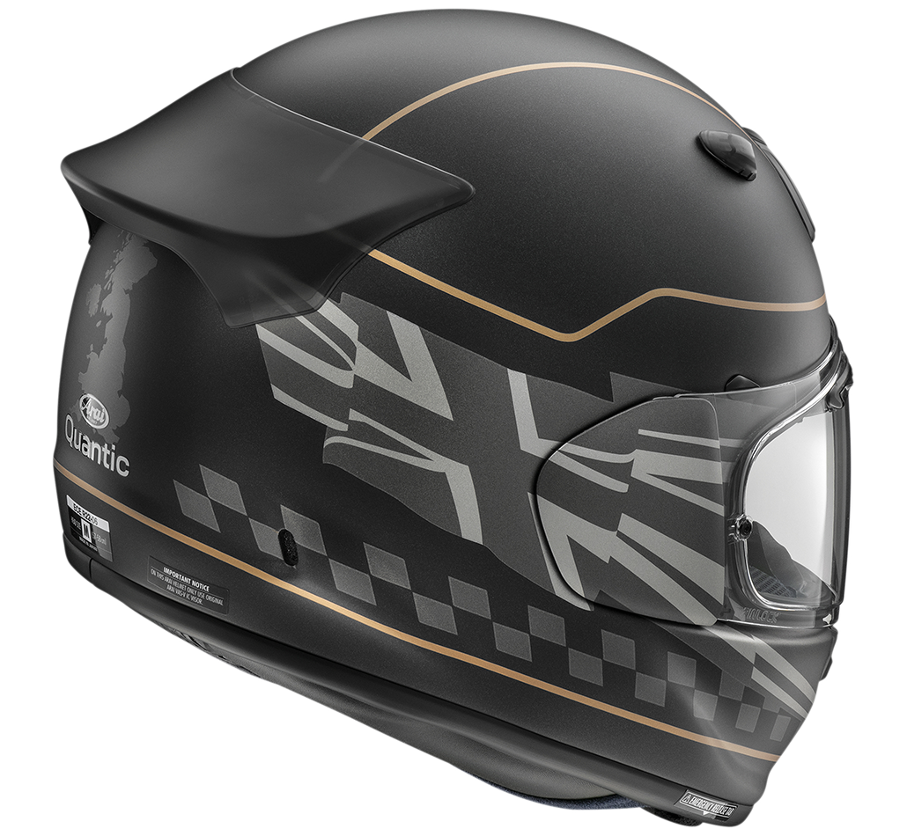

MODELOS DEL CASCO:
.png)
El Arai Quantum-R es un casco integral diseñado para ofrecer la máxima protección y confort
tanto en carretera
como en circuito. Fabricado por la prestigiosa marca japonesa Arai, este modelo combina un
diseño aerodinámico
con una estética moderna y deportiva. Su carcasa exterior está construida en fibra compuesta de alta
resistencia, lo que garantiza una excelente absorción de impactos sin sacrificar ligereza.
Este casco destaca por su sistema avanzado de ventilación, compuesto por entradas frontales
ajustables y
extractores traseros que optimizan el flujo de aire en cualquier situación. Incorpora un interior totalmente
desmontable y lavable, con tejidos antibacterianos que mantienen la frescura durante trayectos largos. La visera
ofrece tratamiento antirrayas y protección UV, y se puede sustituir fácilmente gracias al mecanismo de cambio
rápido propio de la marca.
El Quantum-R proporciona una sensación de silencio y estabilidad incluso a altas velocidades, lo que lo
convierte en una opción ideal para motoristas exigentes. Su equilibrio entre seguridad, confort y diseño lo ha
consolidado como uno de los cascos más valorados en el segmento premium. Además, su amplia gama de tallas y
acabados permite un ajuste perfecto y una apariencia personalizada para cada usuario.
El Corsair Virtuoso MAX Wireless representa la combinación perfecta entre diseño premium y rendimiento de audio
de alta fidelidad. Fabricado con materiales de primera calidad, como aluminio anodizado y acolchado de espuma
viscoelástica, estos auriculares están pensados para ofrecer comodidad incluso durante largas sesiones de uso.
Su aspecto elegante y minimalista encaja tanto en entornos de gaming como en espacios profesionales.
Equipados con potentes transductores de 50 mm con diafragmas de grafeno, los Virtuoso MAX ofrecen una respuesta
de frecuencia extremadamente amplia, con graves profundos y agudos nítidos. Incorporan conectividad inalámbrica
Slipstream Wireless de baja latencia, así como Bluetooth y conexión por cable USB para una versatilidad total.
Además, cuentan con micrófono desmontable con calidad de transmisión profesional, sonido envolvente 7.1 y
compatibilidad multiplataforma con PC, consolas y dispositivos móviles.
Gracias a su sonido de alta resolución y su diseño ergonómico, los Corsair Virtuoso MAX Wireless brindan una
experiencia inmersiva ideal para jugadores, streamers y melómanos. Su batería de larga duración garantiza más de
20 horas de autonomía, mientras que su software Corsair iCUE permite personalizar ecualización, efectos de
iluminación RGB y perfiles de audio. En conjunto, son una opción de referencia dentro del mercado de auriculares
inalámbricos premium.
El Corsair K70 RGB es un teclado mecánico de alto rendimiento diseñado para jugadores que buscan velocidad,
precisión y una estética impactante. Fabricado con un chasis de aluminio cepillado, combina durabilidad con una
apariencia profesional. Su retroiluminación RGB individual por tecla ofrece millones de combinaciones de
colores, permitiendo personalizar el teclado para cada estilo o juego.
Equipado con interruptores mecánicos Cherry MX, el K70 garantiza una respuesta inmediata y una sensación táctil
inconfundible. Incorpora funciones avanzadas como la tecnología anti-ghosting, teclas multimedia dedicadas y un
reposamuñecas desmontable para mayor comodidad. Además, el software Corsair iCUE permite configurar macros,
efectos de iluminación y perfiles personalizados con gran facilidad.
El Corsair K70 RGB destaca por su precisión en cada pulsación, lo que lo hace ideal tanto para gaming
competitivo como para largas sesiones de escritura. Su construcción robusta y su iluminación personalizable
crean una experiencia inmersiva y cómoda. En conjunto, este teclado ofrece una combinación perfecta de
rendimiento profesional, diseño elegante y fiabilidad a largo plazo.